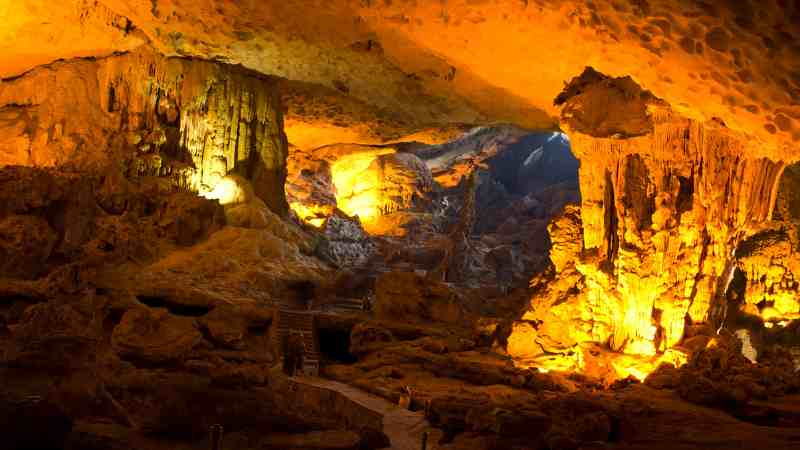

 As we grow up it is important to remind ourselves where we come from and the places that have made us who we are. This tribute is about my hometown of Montpelier Idaho and Bear Lake county as well as some of the spots around the community that I appreciate. Bear Lake County is located in the very southeastern corner of the state of Idaho, situated right next to both the Wyoming and Utah borders. While it can be a very boring place at times, I am very proud to have grown up in a small tight knit community and the values that the citizens take pride in.
The first place that I have to highlight is the natural beauty of Bear Lake and what makes my hometown the place that it is. Bear Lake is a very tourist orientated place that many people from Salt Lake City frequent because of it's crystal blue water and moderate temperatures. People like to boat, fish, and hang out on the shores of the lake with friends and family at all times throughout the summer.
The Minnetonka cave is a limestone cave formed by ground water flowing through limestones, forming sinkholes and underground waterways. Each summer starting memorial day weekend over 40,000 travelers tour the minnetonka cave per summer. Minnetonka cave is one of the great spots around my home town that draws people to my area.
Finally my absolute favorite restaurant in my hometown is the mexican restaurant. They serve breakfast, lunch, and dinner six days a week and each meal is superior no matter the time of day. Each time I come home from college, this restaurant is always one of my very first stops. The food and service is one of the things that makes my hometown stand out.
These are just a few of some of my all time favorite spots around my hometown. The Bear Lake Valley is rich with recreational activity and restaurants that make it a joy for all who visit and live there. While these places are both fun and exciting, it's the people who work at these kinds of places that give you a warm small town hospitality. This tribute was a great reminder of the great place that I got to grow up in.